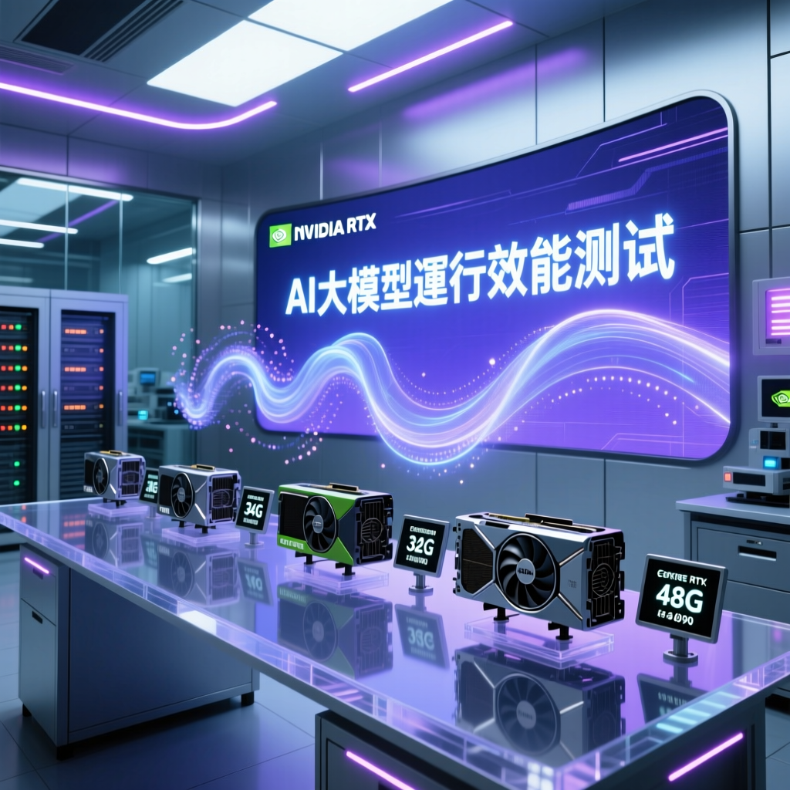

隨著本地部署AI大模型的需求日益增長，不同視訊記憶體容量對運算效能的影響成為關鍵考量。本次報告深入分析24G、32G與48G顯示卡在實際應用中的表現差異，為用戶提供專業選購指南。

本次報告針對不同視訊記憶體容量的顯示卡在執行AI大模型、影象生成和影片處理方面的表現進行了詳細分析。研究指出，24G視訊記憶體是當前最舒適的選擇，能夠流暢執行多種AI模型，包括千萬級別的語言模型。
專家分析認為，對於大多數使用者而言，24G視訊記憶體已經足夠應對日常生產力需求，而更高配置如32G和48G則適合專業使用者和高階應用場景，特別是在處理更長上下文和更高解析度內容時展現明顯優勢。
| VRAM 容量 | 代表顯示卡 | 適合模型規模 | 影像生成 | 影片處理 | 性價比評級 |
|---|---|---|---|---|---|
| 16G | RTX 4060 Ti, RX 7600 | 7B Q4KM | 512x512 流暢 | 基本支援 | ⭐⭐⭐ 入門級 |
| 20G | RTX 3080 20G, RTX 4070 Ti Super | 13B Q4KM | 768x768 流暢 | 短影片處理 | ⭐⭐⭐⭐ 進階級 |
| 24G | 7900XTX, RTX 3090 | 30B Q4KM | 1024x1024 流暢 | 1-2分鐘短片 | ⭐⭐⭐⭐⭐ 最佳選擇 |
| 32G | RTX 4090, RX 7900 XTX | 70B Q4KM | 1536x1536 流暢 | 5分鐘影片 | ⭐⭐⭐⭐ 專業級 |
| 48G | RTX 4090 改裝卡, RTX 6000 Ada | 100B+ Q4KM | 2048x2048 流暢 | 長影片+4K超分 | ⭐⭐⭐⭐⭐ 旗艦級 |
數據顯示，不同容量的視訊記憶體在實際應用中表現出顯著差異，以下是各容量級別的核心特點：
對於大多數創作者而言，24G VRAM是真正的甜蜜點。它足以應對從文字到影像的各種生成任務，同時不會讓你的錢包哭泣。48G是給那些真的需要處理8K素材或訓練超大模型的專業用戶的。
— AI 硬體評論社群，2026年顯示卡選購指南
資料顯示，24G視訊記憶體的顯示卡如7900XTX能夠流暢執行千萬級別的語言模型，如Q4KM電話版本，並支援OpenCloud的執行，達到真正的可用程度。這種配置在大多數情況下已經能夠滿足日常生產力需求，且不會產生過高的託管費用。
社群正在積極整合谷歌的託普礦KV快取技術，大幅減少KV快取的視訊記憶體開銷，使得長上下文不再成為問題。然而，對於需要處理70B級別MOE模型或原生生成1080P影片並超分到4K的專業應用，48G視訊記憶體的顯示卡如RTX 4090改裝卡仍是最佳選擇。
業界觀察指出，NVIDIA的生態系統在AI計算方面更為完善，尤其是在開發工具和框架支援上具有明顯優勢。AMD雖然在價格和價效比方面具有一定吸引力，但在某些特定場景下仍需進一步最佳化才能完全發揮硬體潛力。
未來，隨著技術的不斷進步，更高視訊記憶體的顯示卡將成為市場主流。然而，目前48G視訊記憶體的顯示卡已經足以應對大多數專業需求，特別是在高階創意工作和科研應用場景中。
建議使用者根據自身需求選擇合適的顯示卡配置，以實現最佳的生產力和效能平衡。同時，隨著國產計算卡的崛起和伺服器市場的大規模淘汰，未來的顯示卡市場將呈現更多元化的競爭格局，為消費者提供更多選擇。